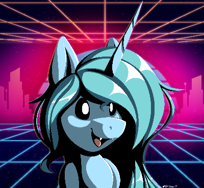

You know, it's funny. It's been 3 years, and up until now, it's been the same experience the entire time. But y'know what? That's okay, we'll get there. One day. 💙
Chances are, if you stumbled on this site, you found me on my Discord. If so, then hi! Thanks for giving my site a look at. It's not much now, but I'd like to hope rectify that in the soon upcoming future. Hopefully, sooner than 3 years. Hey, it only took 3 years to add an actual useful description to this site!
My name is Bat horse, and I like mangos. 
That's an updated picture of me. I love Synthwave! Thanks Notetaker37 for drawing it <3 I'm also quite fond of aviation, and programming! I'm doing my best to make the world a better place, even if it is in small steps. I live to make people happy, and maybe one of these days, I'll succeed in making something people enjoy.
If you see me around, feel free to say hi! I don't bite, don't let the fangs scare you. If you're one of those web crawler bots that scans for social media links, fuck off. I'm not linking my socials here.
If you need to contact me, there's a good chance you can find me on a platform :)
Also, thanks for being patient with me. I hope to have something more formal than this later on.